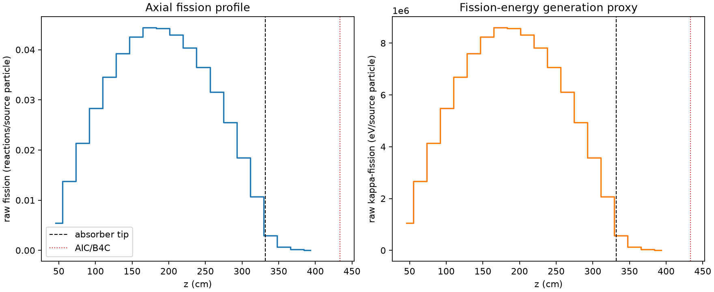
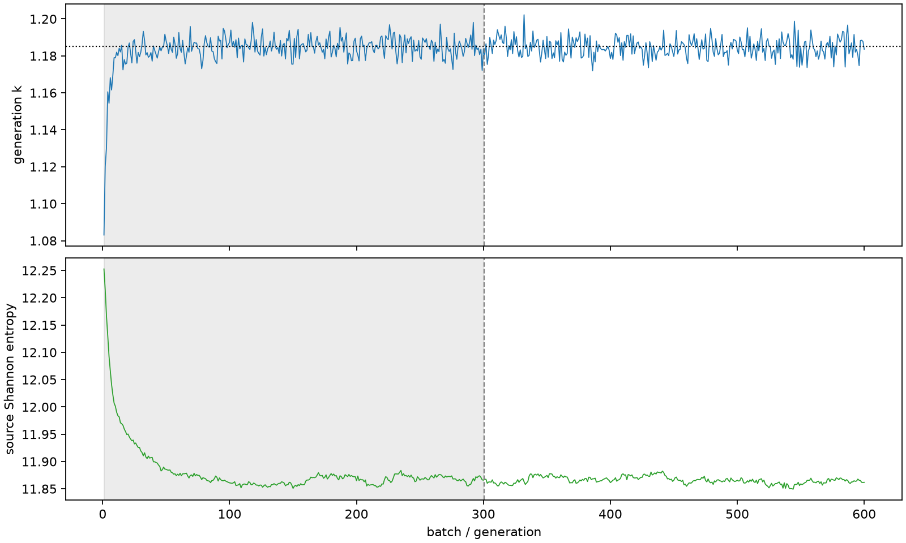

| field | value |
|---|---|
| experiment | V2-STAGE_256_OGRENCI_03-0021 |
| k | 1.1849844921248311 |
| MC standard error | 0.00018249946343049567 |
| seconds | 933.486612253997 |
| acceptance | not_assessed |
| convergence | review_required |
Completed is output integrity only; physical and statistical review required. Zero tallies do not prove zero production or zero uncertainty.
| diagnostic | value |
|---|---|
| geometric fuel voxels | 5280 |
| zero fission tally voxels | 0 |
| low signal fuel voxels | 262 |
| low signal fission share | 6.562121879399968e-05 |
| low signal kappa share | 6.565128341384781e-05 |
| important fission share | 0.9500858331538986 |
| previous filter included | 5018 |
| duration estimate s | 1562.5173488400023 |
| actual minus estimate s | -629.0307365860053 |
| fission relative MC error | statistics |
|---|---|
| all_geometric_fuel | {"voxels": 5280, "positive_mean_voxels": 5280, "zero_mean_voxels": 0, "undefined_relative_error_voxels": 0, "median": 0.010370951190082134, "p95": 0.18519695822267065, "maximum": 0.4422385327360042} |
| low_signal | {"voxels": 262, "positive_mean_voxels": 262, "zero_mean_voxels": 0, "undefined_relative_error_voxels": 0, "median": 0.2591479802341715, "p95": 0.33788336141179437, "maximum": 0.4422385327360042} |
| important_95pct | {"voxels": 3611, "positive_mean_voxels": 3611, "zero_mean_voxels": 0, "undefined_relative_error_voxels": 0, "median": 0.008991504987883493, "p95": 0.013452400542869452, "maximum": 0.01639196581434781} |
| outside_previous_filter | {"voxels": 262, "positive_mean_voxels": 262, "zero_mean_voxels": 0, "undefined_relative_error_voxels": 0, "median": 0.2591479802341715, "p95": 0.33788336141179437, "maximum": 0.4422385327360042} |
| kappa_fission relative MC error | statistics |
|---|---|
| all_geometric_fuel | {"voxels": 5280, "positive_mean_voxels": 5280, "zero_mean_voxels": 0, "undefined_relative_error_voxels": 0, "median": 0.010358211459398081, "p95": 0.18484857102520846, "maximum": 0.4415875419948271} |
| low_signal | {"voxels": 262, "positive_mean_voxels": 262, "zero_mean_voxels": 0, "undefined_relative_error_voxels": 0, "median": 0.2587774925215155, "p95": 0.3374054431391394, "maximum": 0.4415875419948271} |
| important_95pct | {"voxels": 3611, "positive_mean_voxels": 3611, "zero_mean_voxels": 0, "undefined_relative_error_voxels": 0, "median": 0.008982071194745837, "p95": 0.013437069696824903, "maximum": 0.016371468421703526} |
| outside_previous_filter | {"voxels": 262, "positive_mean_voxels": 262, "zero_mean_voxels": 0, "undefined_relative_error_voxels": 0, "median": 0.2587774925215155, "p95": 0.3374054431391394, "maximum": 0.4415875419948271} |
| axial bin | fission share | kappa-fission share |
|---|---|---|
| 1 | 0.011202804366740364 | 0.011203332770571037 |
| 2 | 0.028430646888238677 | 0.02843049073257924 |
| 3 | 0.04412726578422454 | 0.044127063877583084 |
| 4 | 0.05861270301092176 | 0.058612530009555595 |
| 5 | 0.07142873854808861 | 0.07142828834239674 |
| 6 | 0.08106609532060442 | 0.08106593793274271 |
| 7 | 0.08806511277775098 | 0.08806473810121548 |
| 8 | 0.09176350443909102 | 0.09176306549487438 |
| 9 | 0.09148792583404246 | 0.09148774297812381 |
| 10 | 0.08886219931918643 | 0.08886198293234995 |
| 11 | 0.0834322891103394 | 0.08343216902230861 |
| 12 | 0.07552142094542855 | 0.07552135675275798 |
| 13 | 0.06530890593310108 | 0.0653088596149209 |
| 14 | 0.05267319108674858 | 0.05267313726481163 |
| 15 | 0.038113975537076586 | 0.038114022060717435 |
| 16 | 0.022172811301121503 | 0.02217276402282198 |
| 17 | 0.006014086656527291 | 0.006015561681167669 |
| 18 | 0.0013221952200392255 | 0.0013226711708443453 |
| 19 | 0.0003281341953188746 | 0.00032826074475515314 |
| 20 | 6.599372540957466e-05 | 6.602449290219449e-05 |
Histories include the inactive-to-active transition at batch 300. kappa-fission approximates fission energy production, not total heat deposition.

